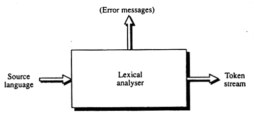
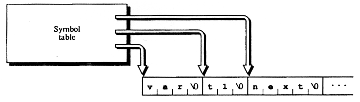

Leksikalsk analyse
Analysen af et kildeprograms struktur starter med den leksikalske analyse. Derefter kommer den syntaktiske og den semantiske analyse. Den sidstnævnte bliver sjældent regnet med, da den ofte ligger meget tæt op af den syntaktiske analyse, og oftest bliver skrevet sammen med denne.
Der er to måder at lave en leksikalsk analysator på. Man kan selv lave den fra bunden (langhåret), eller man kan vælge at få den genereret v.h.a. et program som FLEX, hvilket vi har gjort.
En leksikalsk analysator læser individuelle karakterer fra et kilde-sprog og samler dem i enheder (også kaldet tokens). I Svendsk ville fx h, e, l, t, a og l blive samlet til heltal, der netop er et token.
|  |
| Figur 6-1: Blok diagram for en leksikalsk analysator |
I den leksikalske analyse, fjernes fx kommentarer fra sourcekoden og mellemrum mellem de forskellige tokens.
Et token repræsenteres v.h.a. et heltal og en instans af et token kaldes et lexeme. I Svendsk har vi bl.a. et token heltal hvis lexemes indeholder cifre mellem 0 og 9. I vores tilfælde er det dog ikke umiddelbart muligt at vide, hvilket nummer et token har, da BISON selv genererer dette nummer for os. På den anden side har vi heller i brug for at vide det, da vi arbejder på et højere abstraktionsniveau; vi refererer jo til et givent token ved hjælp af dets navn.
Hvis man har brug for at gemme information omkring et lexeme, bliver man nødt til at gemme disse informationer i en symbol-tabel. Her kan man gemme navne på variabler, deres type og værdi. I Svendsk har vi brug for en symbol-tabel når vi skal gemme en variabels type (heltal, boolsk og streng).
Symbol-tabellen
Symbol-tabellen indeholder informationer om navne brugt i source programmet. Under den leksikalske analyse, kommer den kun til at indeholde variablers navne.
Når man skal implementere en symboltabel, er der to metoder der er mest udbredt. Den ene er pointer-baseret, mens den anden er baseret på en hash-tabel. Hvis man implementerer tabellen med pointere, gør man det i et array, hvor der er en pointer til hvert element i arrayet. Hvis man implementerer det som en hash-tabel, har man en en hash-algoritme, der udregner et lexemes placering i tabellen.
|  |
| Figur 6-2: Symbol-tabel implementeret med pointere |
Hjælperutiner
Det er i FLEX muligt at lave hjælperutiner, hvilket vi har gjort brug af, da vi skulle implementere symbol-tabellen. Disse rutiner benyttes bl.a. til at slå op i tabellen og skrive et nyt navn i den. Nedenstående uddrag fra filen symbtab.c viser en funktion lookup, der checker om et ID findes i symbol-tabellen:
int lookup(char* s)
{
// Returnerer typen hvis fundet, ellers T_UNDEF
struct SYMB* tmp = symbtab;
while(tmp != NULL)
if(gScope >= tmp->scope && strcmp(tmp->navn, s) == 0)
return(tmp->type);
else
tmp = tmp->naeste;
return(T_UNDEF);
}
Som det ses returnerer funktionen ID’ets type, hvis det findes, og hvis det ikke findes, returnerer den T_UNDEF.